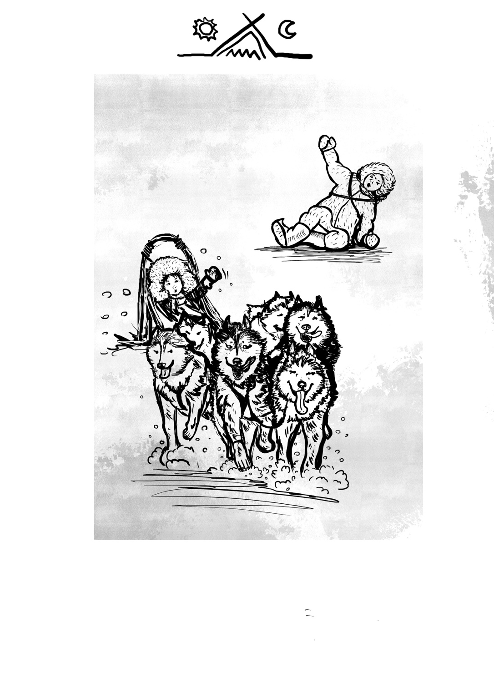
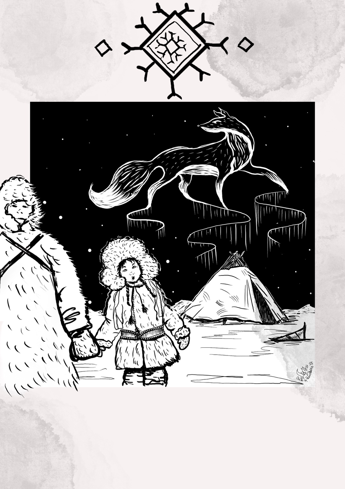

Jak vznikla Uki
Uki vznikla vlastně úplnou náhodou.
Jednou jsem si jen tak nakreslila malou eskymáckou holčičku, která nesla rybu. Dala jsem jí jméno Uki – a tím to tehdy skončilo.
Jenže ona mi nějak zůstala v hlavě.
Postupně jsem si kolem ní začala vymýšlet příběh. Tatínka, psí spřežení a cestu, při které psi Uki odnesou někam daleko do neznáma. Vznikaly první obrázky a ilustrace. Když se na ně dívám dnes, je na nich krásně vidět, že i samotná Uki původně vypadala trochu jinak a celý její svět byl mnohem víc „eskymácký“ než finský.
Pořád jsem ale nevěděla, jak příběh uchopit. Do jaké doby ho zasadit. Kde přesně bude Uki žít. A hlavně jak její příběh přirozeně propojit se světem, který znám a miluji – se psím spřežením.
A tak Uki čekala.
Dva roky ležela v šuplíku.
Až se mě jednou na závodech Jana Henych zeptala:
„Tak co Uki? Kdy bude kniha?“
A tím mě nakopla.
Řekla jsem si, že bych se tomuhle svému dítěti – své jediné dceři, když doma mám dva už dospělé kluky – měla konečně pořádně věnovat.
Vytáhla jsem Uki ze šuplíku.
A v hlavě začal pomalu růst svět Sillanmaa.
První podoby Uki
Sem doplníme původní kresby a ilustrace. Právě na nich bude nejlépe vidět, jak se měnila Uki i celý svět kolem ní.


První kresba
Malá holčička s rybou dostala jméno Uki.
První příběh
Tatínek, psí spřežení a cesta někam do neznáma.
Dva roky v šuplíku
Uki čekala, než přijde správný okamžik.
„Tak co Uki?“
Jedna otázka na závodech znovu otevřela celý příběh.
Sillanmaa
Začal růst svět, do kterého se Uki vydá za starý viadukt.